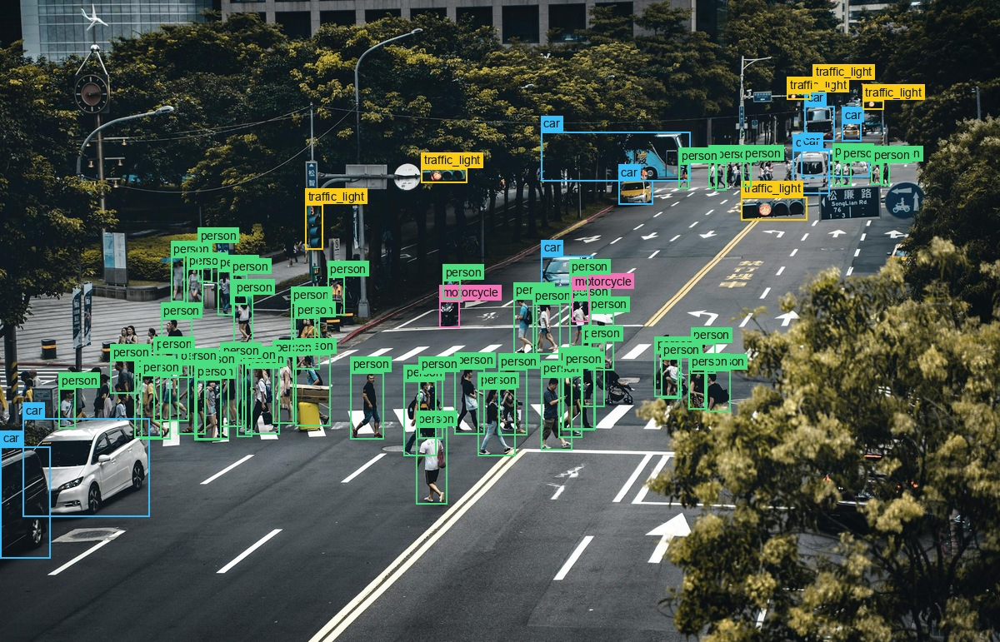
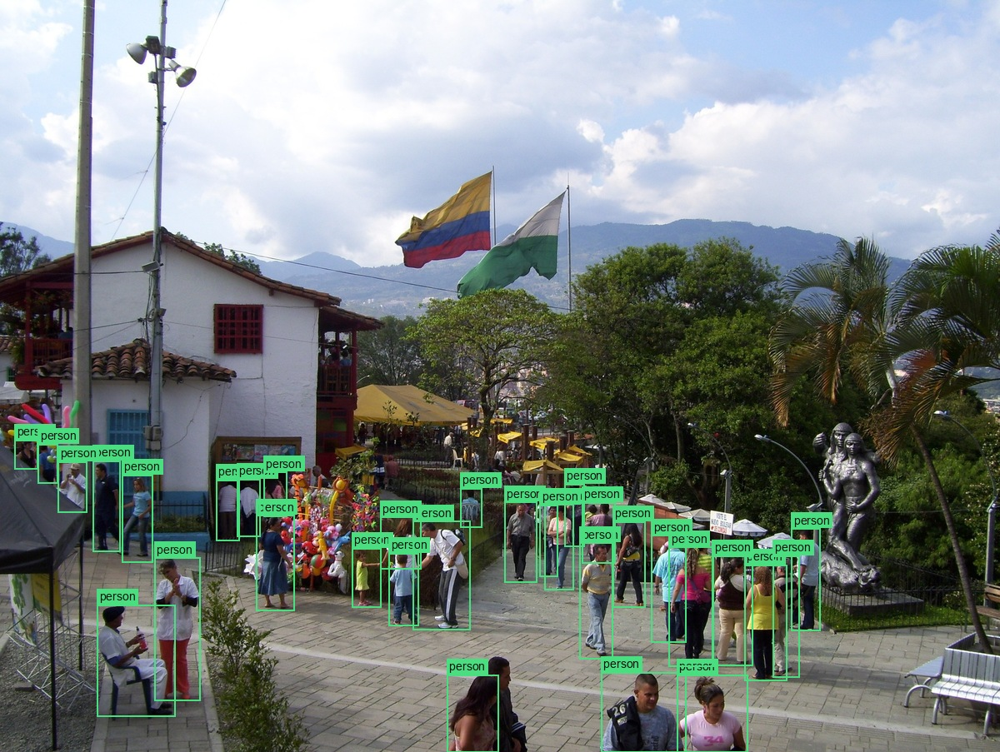
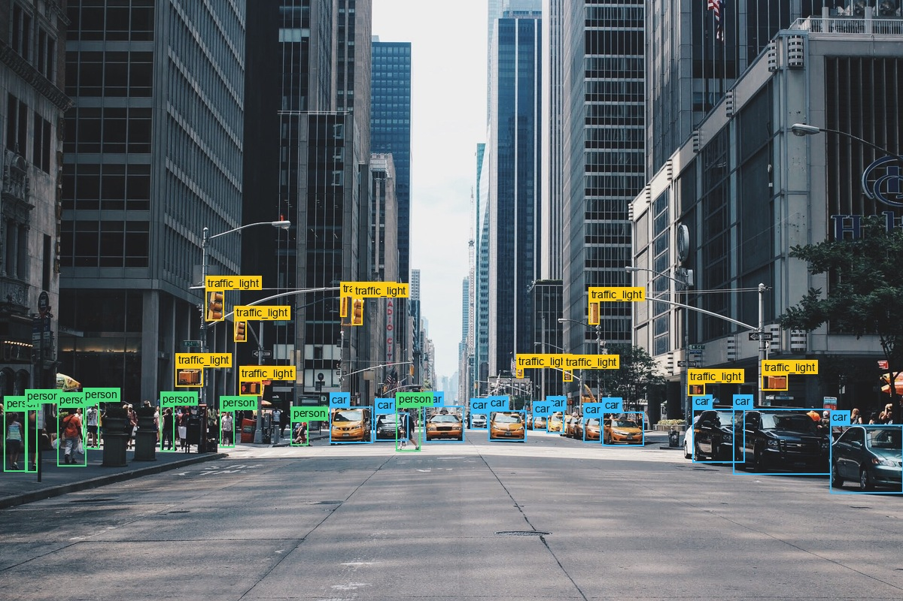
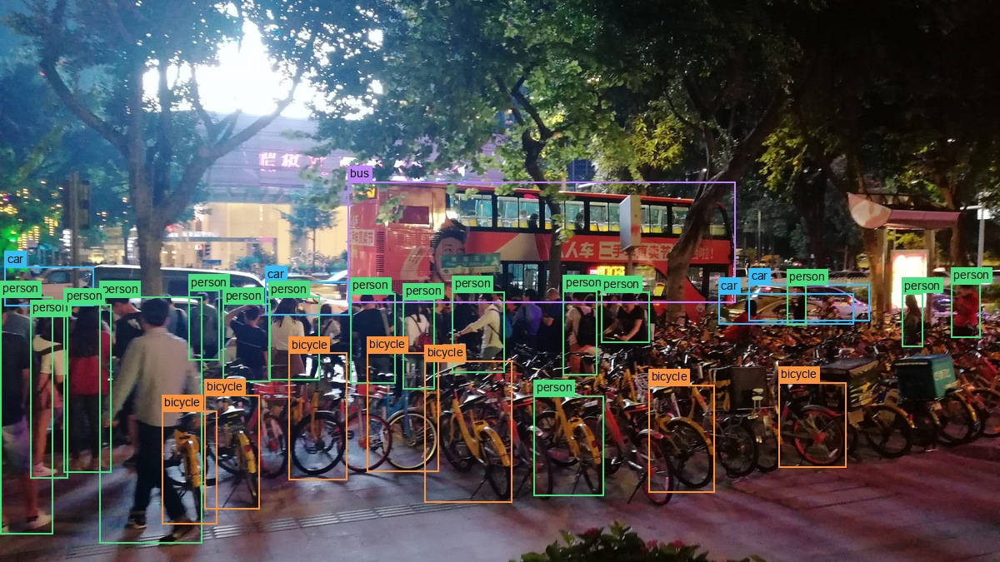
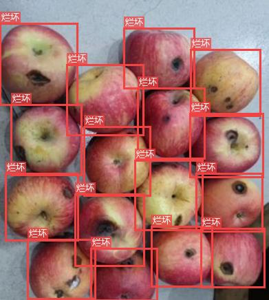
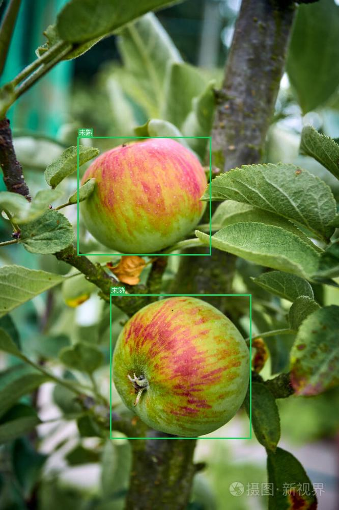
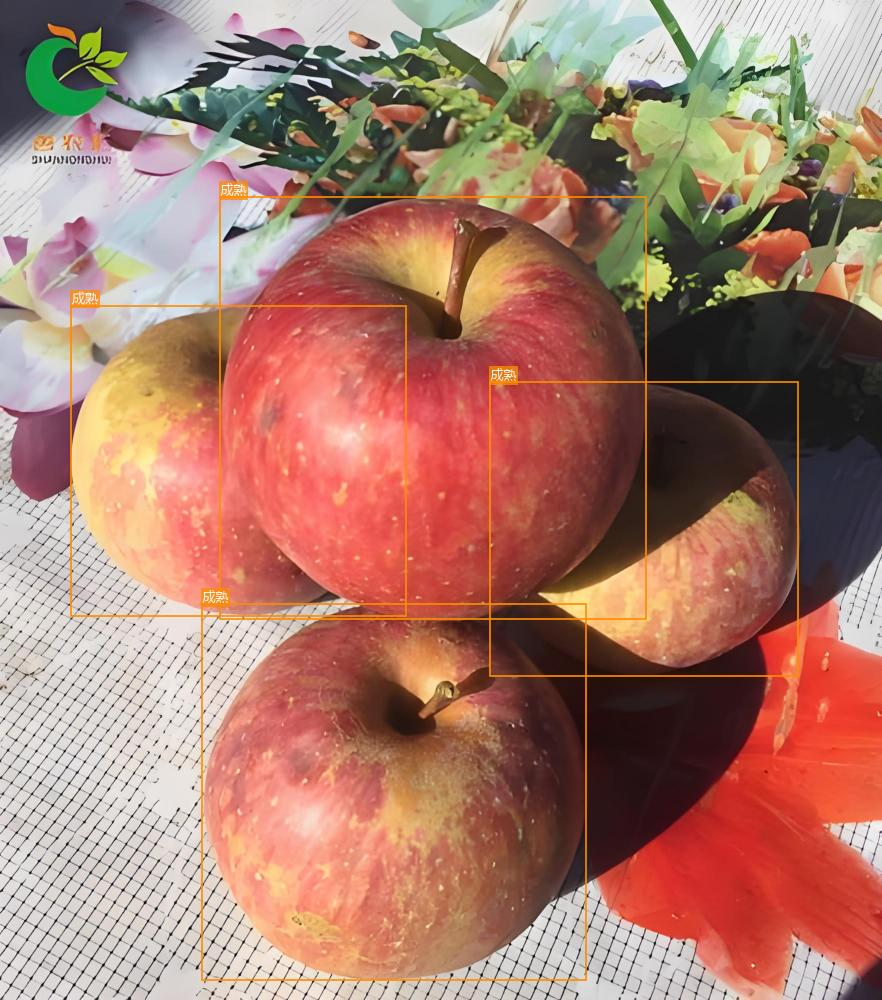
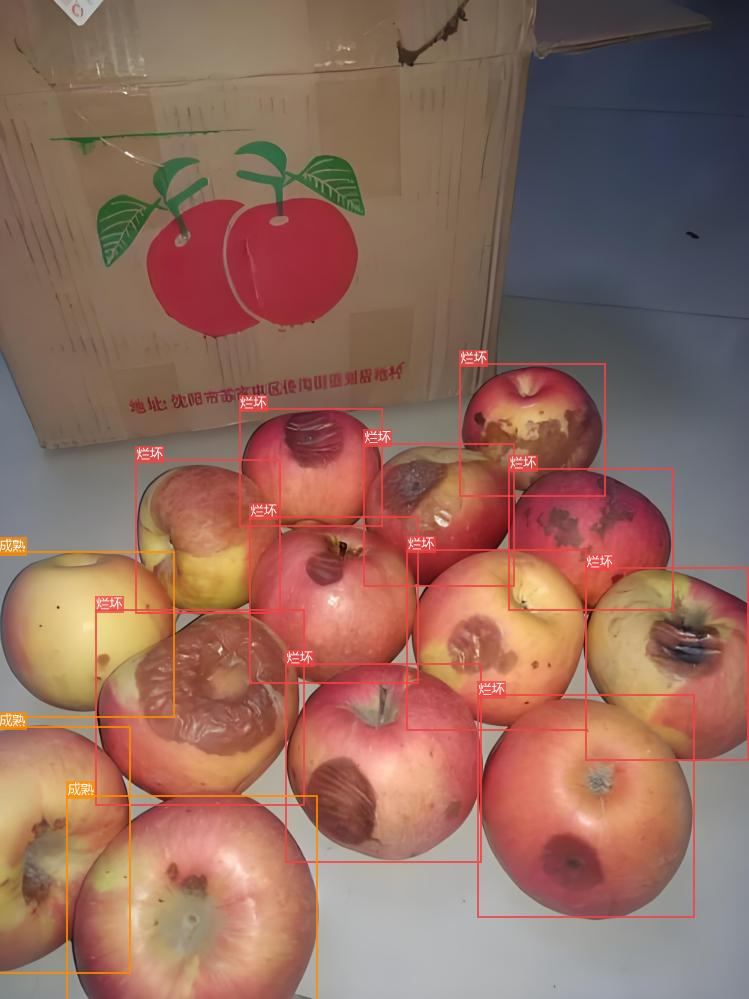
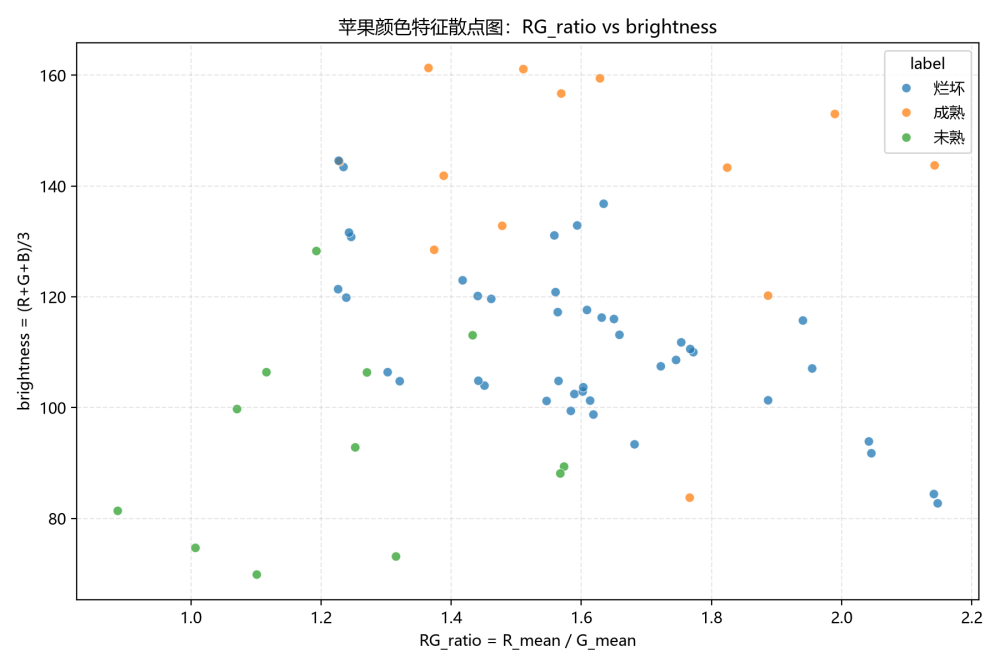

04 / ANNOTATION & TRAINING
标注训练
让数据获得标签、类别与可学习结构
以真实项目展示标注质量、类别分布与特征实验；本集合页只展示可复现实验，不宣称模型训练能力。
ANNOTATION & TRAINING PROJECTS
标注训练项目
PROJECT 01 / TRAFFIC OBJECT ANNOTATION交通目标框标注已有人工标注 / 待补标注与复核
已标注图片65张
目标框1166个
目标类别6类
待补标注20张
类别分布
- person777
- car251
- traffic_light101
- bicycle30
- bus4
- motorcycle3
标注展示
依据现有人工 XML 标注生成展示副本；框坐标按图片尺寸同步缩放，英文标签仅去除首尾空白，原标注文件保持不变。
代表性标注 · 第 1 组


代表性标注 · 第 2 组


− 收起标注质量
- 空标注
- 0
- 无效框
- 0
- 越界框
- 0
- 极小框 · 待人工复核
- 27个
- 标签尾部换行 · 待规范
- 10个（person 5 / traffic_light 5）
27 个极小框待人工复核，不直接判定为错误框；20 张无 XML 的图片为待补标注。以上质量统计不代表人工逐框复核已经完成。
PROJECT 02 / APPLE ANNOTATION & FEATURE CLASSIFICATION苹果图像标注与特征分类已完成 / 可复现实验
标注展示
代表性标注 · 第一组

annotated_1 · 烂坏 16 框

annotated_8 · 未熟 2 框

annotated_6 · 成熟 4 框
代表性标注 · 混合场景

annotated_3 · 烂坏 + 成熟 混合
特征与阈值实验
− 收起实验
特征与阈值实验
颜色特征散点图（RG_ratio vs brightness，按标注类别着色）

使用的特征
- brightness = (R_mean + G_mean + B_mean) / 3
- RG_ratio = R_mean / (G_mean + 1e-6)
- RB_ratio = R_mean / (B_mean + 1e-6)
阈值规则（apple-rules.md）
| 判定 | 条件 | 说明 |
|---|---|---|
| 成熟 | brightness ≥ 135 且 RG_ratio ≥ 1.55 | 够亮且明显偏红 |
| 未熟 | brightness ≤ 95 | 亮度过低（偏暗） |
| 烂坏 | 其余情况 | 介于两者之间（偏暗红 / 褐） |
特征 + 阈值规则实验 · 非神经网络训练 · 无模型权重
阈值来自原项目脚本中的真实规则；本实验不包含训练过程，也没有模型权重文件。
下一阶段：测试与评估
以标注结果与特征实验为基础，衔接后续测试与评估。